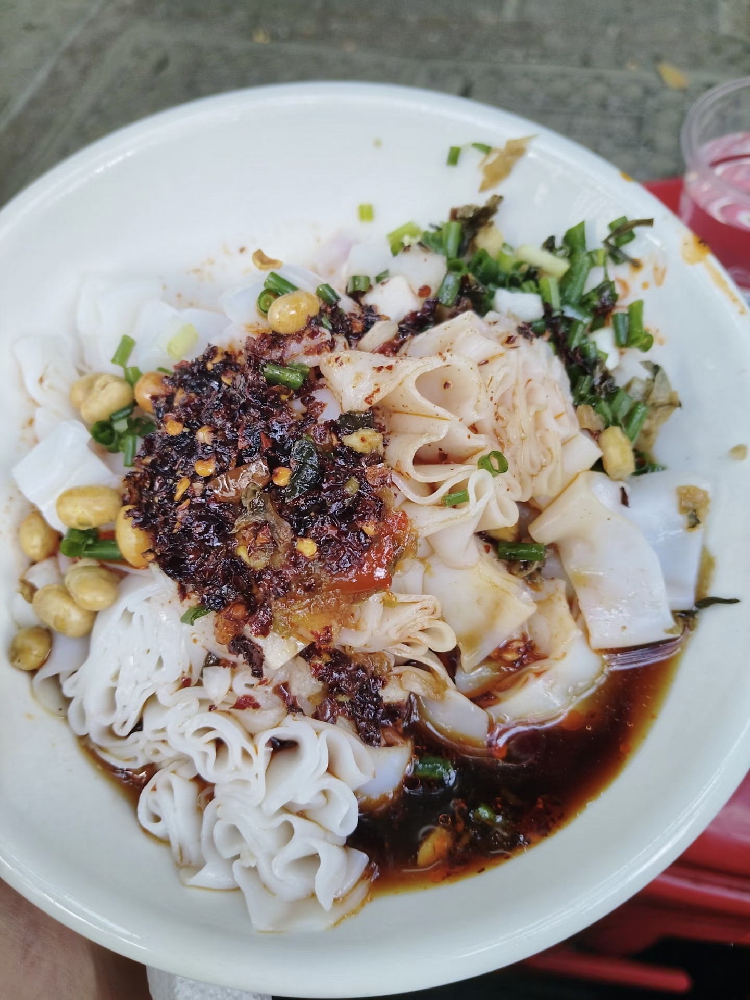
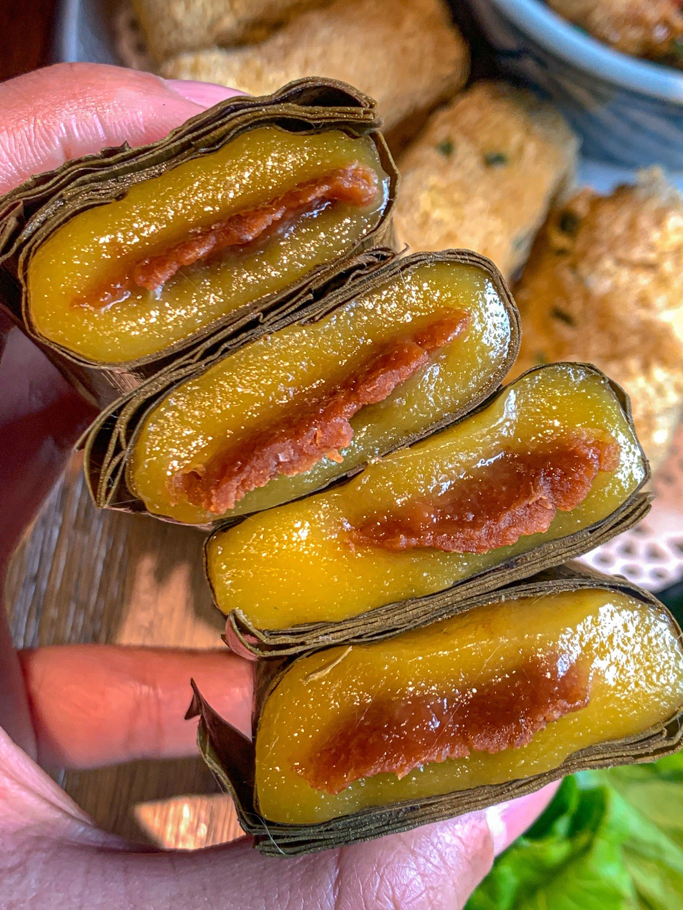
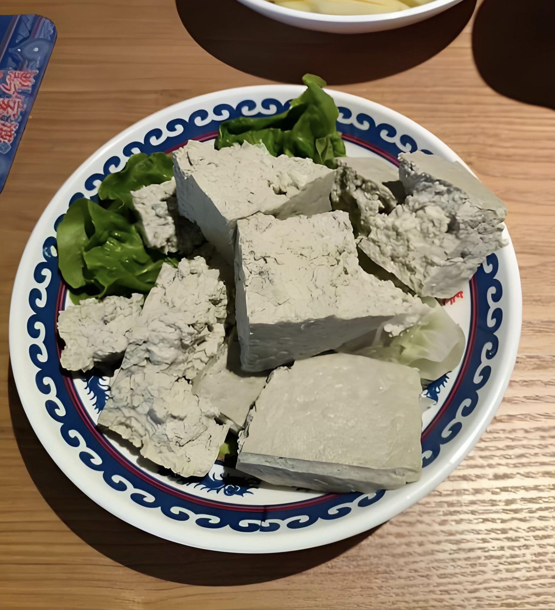
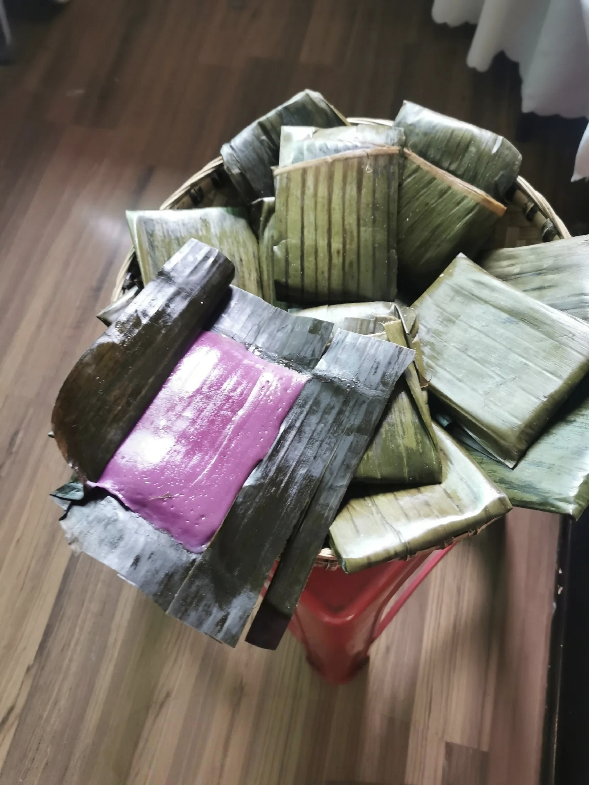
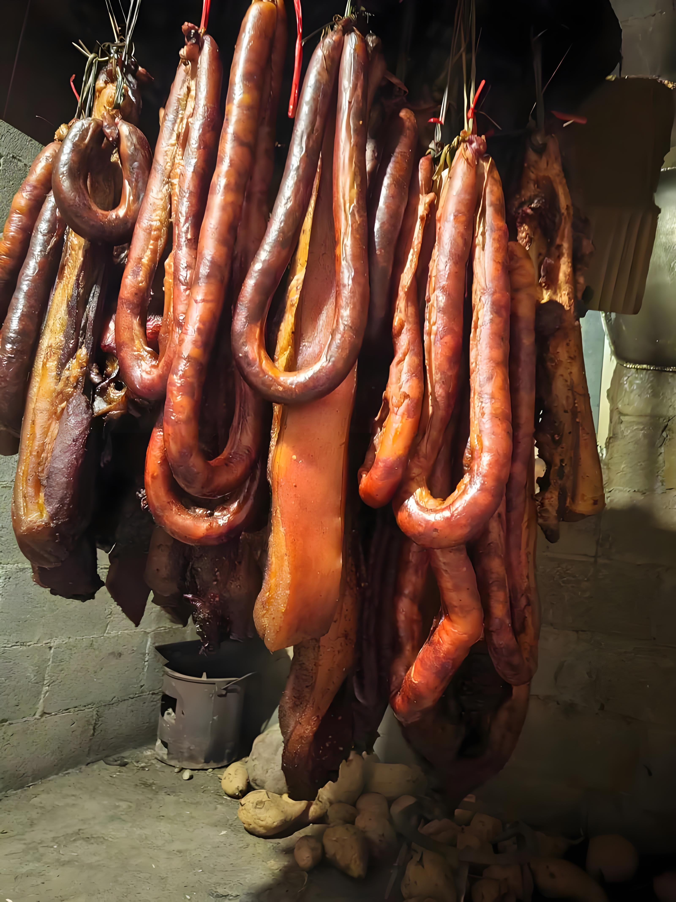

山水湖城，长寿罗甸，品味亚热带风情地道风味
罗甸地处贵州南部，素有“天然温室”美誉，食材丰富、风味浓郁。本地美食融合布依、苗、汉等多民族特色，以鲜、香、酸、辣为主，取材天然、做法地道，是黔南南部最具代表性的舌尖滋味。

罗甸剪粉是当地招牌小吃，米粉薄嫩筋道，现蒸现剪，搭配秘制酱料、酸萝卜、花生碎，酸辣爽口、香气十足，是罗甸人最爱的早餐与街头美食，百吃不厌。
罗甸豆花烤鱼选用高原湖泊活鱼，炭火烤制后浸入麻辣汤底，搭配鲜嫩豆花，鱼肉外焦里嫩、豆花吸满汤汁，麻辣鲜香，是来罗甸必吃的江湖名菜。

荷叶粑是罗甸传统特色糕点，用糯米、红糖包裹荷叶蒸制，色泽清亮、软糯香甜，带着淡淡荷叶清香，冷热皆宜，是当地节庆与日常必备小吃。

罗甸酸汤豆腐以本地酸汤点制，豆香浓郁、细嫩入味，煮火锅、红烧、凉拌皆可，口感滑嫩、酸香开胃，是罗甸最具农家特色的经典菜品。

罗甸是贵州火龙果主产区，用鲜果制作甜品、凉菜、热菜，色泽鲜艳、清甜爽口，果香浓郁，是独具亚热带风情的特色美食，健康又美味。

罗甸腊肉香肠选用本地土猪，传统腌制烟熏而成，肥瘦均匀、香味醇厚，蒸、炒、煮都十分下饭，是罗甸最具年味与乡土气息的腊味美食。